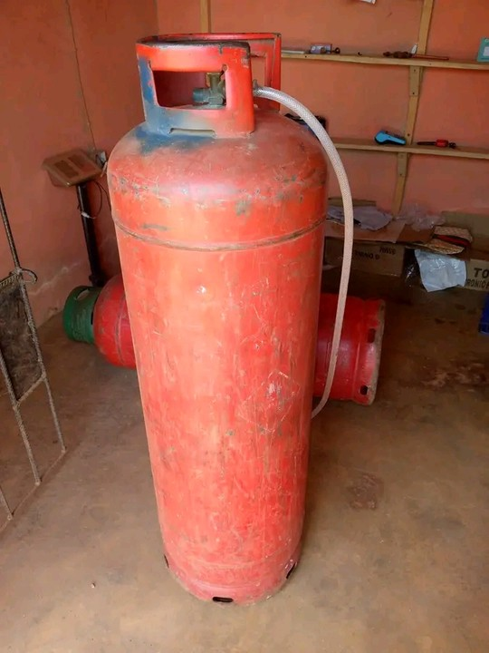

Gas Tips, Safety Advice, Business Insights & LPG Market Updates for Nigerians

The "50kg" stamp is not a promise of 50kg of liquid gas. Here is the 88% safety rule, the scale reading you should expect, and the cheating that is actually worth walking away from.
Start with as low as ₦500,000. Complete cost breakdown for side hustlers, nursing mothers, retirees, and anyone seeking extra income. Real equipment prices, 3 budget tiers, and profit projections from a working seller in Delta State.
The dealer price at the depot is now around ₦1,090 per kilogram. By the time that gas reaches your local seller, you are paying anywhere between ₦1,200 to ₦1,400 per kg. Here is why — and how to protect your wallet.
That cheap gas by the roadside might cost you your kitchen, your health, or worse. Here is what roadside sellers will not tell you — and why verified sellers matter.
A 12.5kg cylinder should contain 12.5kg of gas. But some sellers use tricks to give you less. Learn the signs, protect your money, and never get cheated again.
Download the OGas app and get gas delivered to your door in Oteri, Ughelli, and beyond.
WhatsApp: 0913 311 0237